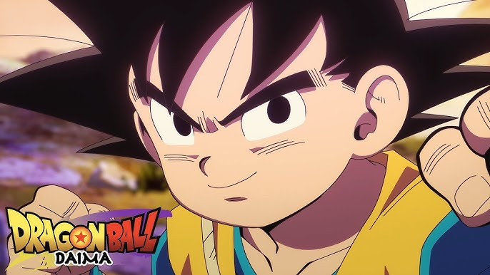
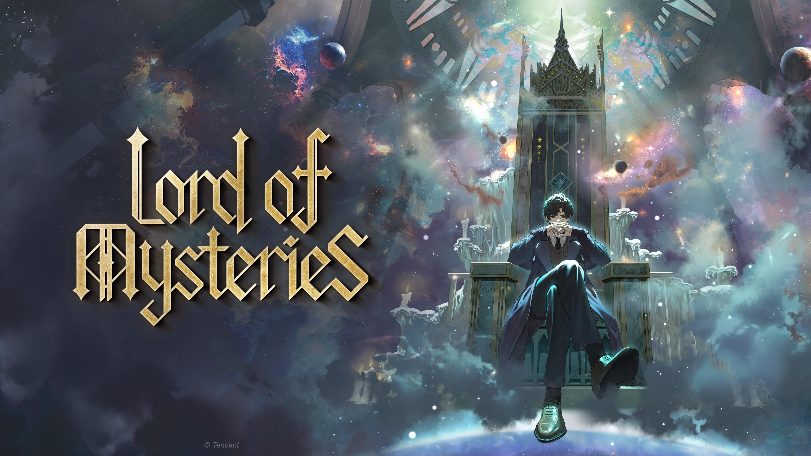

Principais animes da temporada
Dragon Ball Daima
Em Dragon Ball Daima, Goku e seus amigos são transformados em crianças por um demônio misterioso chamado Rei Gomah. Para reverter a maldição, eles precisam viajar para o Reino dos Demônios, onde encontrarão novos desafios, aliados e as "Esferas do Dragão" daquele mundo para voltarem às suas formas originais. A série é ambientada após os eventos de Dragon Ball Z e antes de Dragon Ball Super.
Lord of Mysteries
"Lord of Mysteries" (Senhor dos Mistérios) é uma web novel chinesa de fantasia sombria e investigação sobrenatural ambientada em um mundo com estética vitoriana e elementos steampunk. A história segue Zhou Mingrui, um homem da China moderna que, após um ritual misterioso, desperta no corpo de Klein Moretti, um jovem em uma cidade alternativa chamada Tingen.
One Piece

A sinopse de One Piece gira em torno de Monkey D. Luffy, um garoto com o corpo de borracha que, ao lado de sua tripulação, os Piratas do Chapéu de Palha, busca o lendário tesouro "One Piece" para se tornar o Rei dos Piratas. A jornada os leva a explorar mares perigosos e a enfrentar diversos inimigos em busca de aventuras e desafios.
To be Hero X

Em To Be Hero X, o poder dos heróis vem da confiança que o público deposita neles. As habilidades são quantificadas e exibidas em medidores de confiança nos pulsos das pessoas, e o herói mais popular é chamado de "X". A história segue múltiplos heróis lidando com a instabilidade de suas posições, já que a perda de popularidade significa a perda de poderes. O protagonista é um funcionário comum que, após um evento bizarro, é forçado a assumir a identidade de um herói famoso, o Nice.